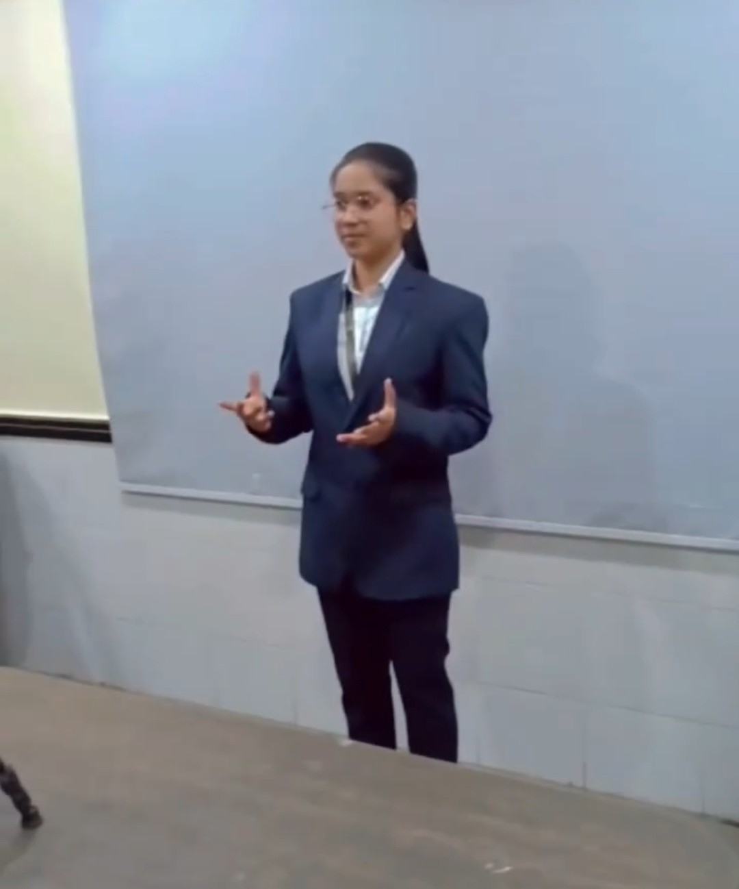
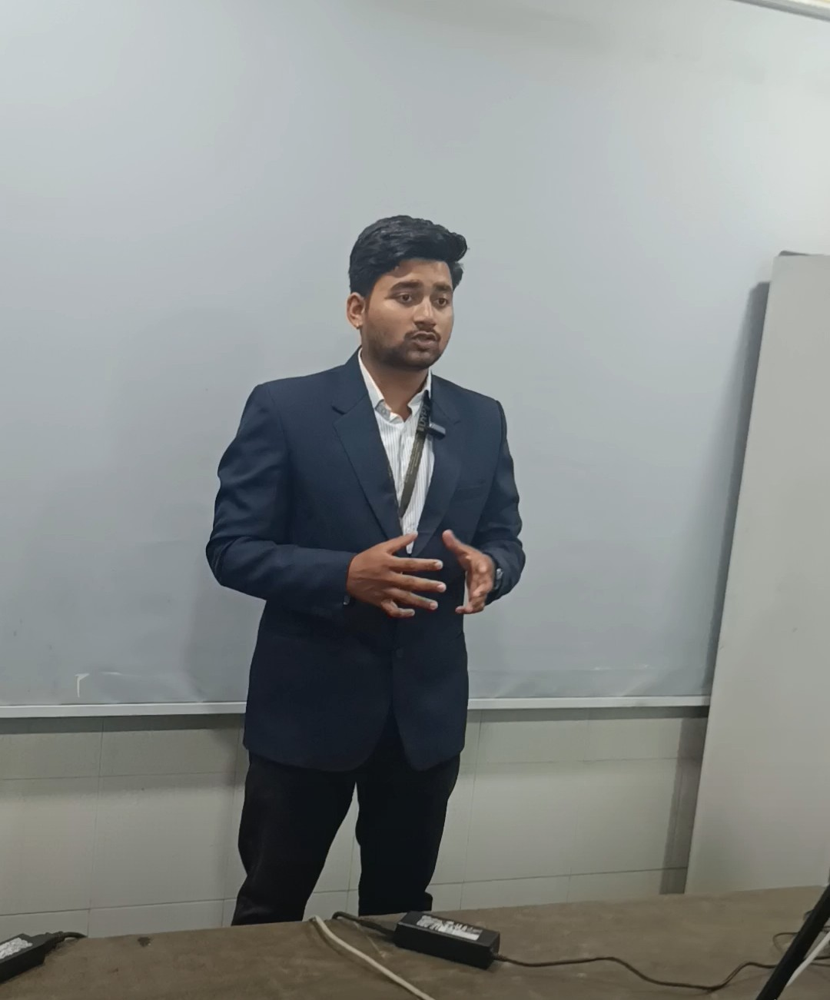

The Hackathon That Taught Me How Hard It Is to Lead Friends
A month of sleepless nights, six very different friends, and what SIH taught me about leading a team.
The Smart India Hackathon, or SIH, is one of the most memorable experiences of my whole college life. It taught me things about myself, my friends and the bond between us that nothing else ever has.
It’s also the hardest story I’ve written on this blog. It has conflicts, hurt feelings, headaches, long nights, and a lot of love tangled in between. I’ve tried to tell it exactly as it happened, including the uncomfortable parts.
THE WISHA wish, and a promise to myself 🎯
In my third year of degree, I had one wish: to win a hackathon with my own classmates, and to be the one who led the winning team.
This wasn’t my first hackathon. I’d been through a few, and I’d even won a prize at one with my old diploma friends at PICT, where we took 2nd place. To me, a 2nd prize still counts as a victory. But in that team I was one member among six. This time I wanted to do it myself, with people I studied with every day.
I believed we had what it took. We had talent. We had the opportunity. All we needed was the right amount of effort to make it pay off.
I had also been part of SIH in my second year, in a team of Harshada, Deep, Vinay, Mahesh, Sharayu and me. That time I didn’t like our project, because it wasn’t clear or unique enough for me to believe in. So this time, we decided to do things differently.
THE EXPLAINERHow SIH works?
(for readers outside our world)
SIH is a national hackathon. Teams choose a problem statement (PS) from an official portal, a real-world problem posted by an organisation, and build a solution for it. It has three phases:
- Internal hackathon. This takes place at college, where every team presents to judges. The best teams are nominated.
- PPT screening. Nominated teams submit a presentation on the official SIH portal. Each team can submit at most two decks, on different problem statements, to improve their chances: if one doesn’t get selected, the other might, depending on how many submissions that problem statement receives. Only 5 out of about 500 decks per problem statement are selected. That’s roughly a 1% chance, and honestly, it’s the hardest phase of all.
- Grand Finale. The five selected teams per problem statement compete in a 24-hour physical hackathon, and 1 or 2 winners are picked.
THE CALMThe calm I wanted to learn 😌
Before I tell you about SIH, I have to tell you about PICT.
That was the 24-hour hackathon I wrote about in Student of Life. I was there with my diploma friends Tanishq, Harsh and Kartik, and two new people, Pratik and Suhani, both former SIH winners.
I was very tense. Nothing was fully working, and time was running out. But Pratik handled the entire team beautifully. He was so relaxed and calm that we were a little worried about him. And then, at the time of the presentation and explanation, he was the one who impressed the judges and took us to 2nd place.
I came away deeply impressed. Not by his skills, but by his attitude towards the team and the project. I told myself: I want to be like that.
THE RESEARCHThe research phase 🔍
For SIH, we did our homework properly. We went through every problem statement on the portal, one by one, with the pros and cons of choosing each.
We did all the normal things a hackathon needs: picking a PS, understanding its requirements, building our approach, prototyping the solution, and so on.
But one thing almost always gets missed, and it has the biggest effect on success: team bonding.
I learned this the hard way. You can watch any number of YouTube videos on how to win SIH. They’ll teach you how to pick the best problem statement and how to make the best presentation. But nobody teaches you how to lead a team of friends.
THE TEAMThe team 👥
I led a team of five others: Vinay, Sharayu, Mahesh, Harshada and Pranav.
Honestly, this wasn’t the most skilled team in college. But it was the best I could get. Sharayu and Harshada had both received offers to join other teams, and they chose to stay, because they felt leaving wouldn’t be good for our friendship.
I had also asked Tejas, a friend from the IT department and a very skilled developer. But he’d already built his own team. (That’s a different story. He’d asked me a few times in the past to join hackathons with him, and I’d always refused with some flimsy excuse about not having time. So it was only natural that he didn’t ask me this time.)
This is who I ended up with:
- Vinay The best of us in ML, training models and AI development, but the weakest at presentation and explanation.
- Sharayu Good enough at presenting, fair at frontend and web design.
- Mahesh A little into backend design, good at thinking and decision-making, but his mood decided how much he gave.
- Harshada The best presenter, no one could catch her there. But not much coding experience outside Android development.
- Pranav A jack of all trades with AI and a master of none, and good at presentations.
- Me Terrible at presentations (though sometimes lucky) and terrible at frontend, but solid at backend and system design.
THE CRACKSThe cracks before we even began 💔
Every team has internal conflicts. They don’t matter much when everyone is pulling in the same direction. In our case, a lot was going on underneath, in our friendships and personal lives, and it made it harder and harder to stay together as a team.
Vinay and Sharayu couldn’t work with each other, or even talk to each other, because of something between them from the past.
Mahesh and I had a problem too. I was deeply hurt because Mahesh had said a few things about me and my career choices to his family, and also told them about our startup. His family then advised him to be less close to Yash and Vinay, and closer to Sharayu, because “that’s where your benefit is.” That sentence stayed in my mind, and it’s still there.
But I made one decision: no one would bring their personal conflicts into SIH. I didn’t want old fights ruining this. That’s also why I didn’t push Mahesh too hard on tasks. I was protecting the hackathon, and, if I’m honest, protecting my own hurt feelings too.
THE PROBLEMGetting everyone to understand the problem 🗣️
The first big challenge was simply getting everyone to understand the problem statement and what they needed to do.
I’ve always been terrible at distributing work. This time I tried hard not to do everything myself, and to let others struggle a little before I jumped in and got my own hands dirty.
But first, everyone had to understand the PS. And that took a few days just to arrange, because we couldn’t get everyone into one meeting. Everyone was busy with their own lives. Harshada couldn’t stay after lectures because she lives far away. Pranav couldn’t join online meetings because his house has no network range. And the others, to be honest, didn’t take online meetings seriously.
So I decided to explain it all in person. One day, Harshada stayed back after classes, and I explained the problem statement to everyone.
And true to my habit of explaining everything, I spoon-fed them the whole soup: what the problem was, what it needed, what we had to do. It was complex for them, and even I was a little confused while explaining. But we got through it somehow.
THE REASONSSix people, six reasons 🧭
In the beginning, Mahesh and Pranav showed almost no interest. I’d assign a task and they’d take it lightly, coming back with a one-or-two-prompt ChatGPT answer and saying, “I’ve done the research.”
Harshada was the opposite. She kept saying, “Give me a task, give me a task.” But once she had one, she often couldn’t figure out how to do it, and Vinay ended up taking care of it.
Sharayu was interactive and built the frontend, but she got very irritated whenever I asked for changes or improvements.
Vinay was the only one who did everything I asked, sometimes by his own will, sometimes with a little blackmail 😅, but it was always worth the time.
The Mahesh episode. For a while, Mahesh didn’t finish his assigned work, and didn’t even send updates after being reminded several times. So I stopped giving him tasks. He noticed that everyone else had work except him, and he reached out and started asking me to assign him something.
I was angry, so I stayed silent. After a while, I sat him down and explained what had gone wrong: he had given no updates at all.
His response was that the others weren’t doing anything meaningful either.
I told him something I truly believe:
I always praise people for trying, not for succeeding. — what I told Mahesh
I knew that Harshada had also struggled with her research task, which is why Vinay later took it over. The same with Sharayu: what she tried during research was dismissed later because it wasn’t good enough. But that doesn’t mean they didn’t try. They tried, and they failed. And I appreciate that far more than not trying at all, which is what you did.
Mahesh agreed, and from then on he started working normally.
The Pranav episode. Pranav did his tasks, but only for the sake of doing them, with no responsibility coming from the heart. He’d paste my questions into ChatGPT or Gemini and send me the output. I told him many times that this wasn’t how it should be done. I asked him to do deep research and then explain me the summary. Instead, he’d read the AI’s whole answer aloud, which I could have done faster and better myself. I was frustrated.
When I asked him to give SIH more time, he said he couldn’t, because he had his Civil exam to study for. I asked him to put it aside for just a few days until SIH was over. He didn’t agree. So I stopped forcing him.
I was disappointed. I had assumed everyone would give SIH the same dedication and devotion I did. I was wrong.
Slowly, I understood what was driving each of them:
- Pranav wanted to take part in a hackathon, but not to give it his full effort.
- Sharayu was doing it to feel that she belonged in the group.
- Harshada was doing it because she had something to prove to Deep.
- Vinay and Mahesh were doing it because of me.
Not one of them had an inner motivation pulling them towards the group’s outcome as a whole.
THE PLANThe plan for the internal round 📋
For the internal round, we decided that Harshada, Pranav, Sharayu and I would present. Vinay’s job was to keep Mahesh’s mouth shut. And Mahesh’s job was to stay silent 😅
That sounds like a joke, but it came from experience. Mahesh doesn’t listen to anyone when he wants to prove a point. In our previous SIH, he had actually argued with a judge and told him the judge was wrong. We couldn’t risk that again.
We also divided the slides:
- Harshada: the introduction and a brief explanation of the solution.
- Me: the overall system and the technical architecture and approach.
- Sharayu: feasibility and viability.
- Pranav: the benefits.
THE DAYPresentation day 🎤
On the day, I was very tense. I couldn’t remember a single thing I was supposed to say.
But we had some luck. Vinay was the SIH coordinator of our class and was already well known among the teachers. Each hall handled 10 to 20 presentations, with one or two judges and faculty members supervising. Vinay was invited to coordinate in one hall, and he asked the teacher to assign him the hall where we’d be presenting, so he could share some insider information and help if needed.
Only team leads were allowed to stay during other teams’ presentations, so I stayed and watched the three or four teams that went before us. They were all second-year students, and nobody performed well. That relaxed me a little.
Then it was our turn.
Harshada delivered her part beautifully.
Then I explained the architecture, making eye contact with the judge throughout. At one point I said, “We had a problem here in the flow, and this is how we solved it.” And in that moment, something happened that I’ll never forget. The judge’s face turned curious as I described the problem, and when I mentioned the solution, he smiled back. No words were exchanged, only eyes. It felt like two mature software engineers who had found a flaw in a system design and fixed it together.
Sharayu went next. I had expected better. She sounded like she’d crammed everything and was reciting it. Pranav was a bit nervous, but handled it well.
We then moved the judge’s attention from the slides to the printed source documents we’d brought, the charts and sources. He didn’t read through them much, but he still noticed that our data was highly skewed and pointed it out: most of the positive data points lay in one region, while the other regions had almost none.
Then came the questions. Harshada made one mistake: she said she had worked on the ML side. We knew she hadn’t been involved in how we researched it. The judge’s natural next question was: “Which other models did you consider for comparison, and what made this one better?” She couldn’t answer. Sharayu tried to help, but we had no idea about ensemble learning, a technique where several models work together, and the model we were using was part of one. So we couldn’t explain it.
Still, compared to the presentations before ours, ours was far better. We walked out smiling. Harshada felt guilty about her mistake, and I told her, “Chill. Don’t worry about it.”
THE PRAISE“Everyone praised me” 🥹
After the round, everyone in the team praised me for handling the team well. I felt really good, even a little emotional, but I didn’t show it. I just kept a silent smile.
I also knew this internal round was nothing compared to what was coming. The real challenge was the PPT screening on the official portal.
THE SCORESThe scores that shook us 📉
Some time after our presentation, Vinay called me. He said that a few presentations after ours, including the one by Deep’s group and one other, were really good, and had more marks than us. I was a little sad, but I still believed we’d get through.
Harshada heard it differently. She was told that Deep’s group and ours had scored the same marks, which wasn’t actually true. This made her blame herself even more for her mistake in the Q&A.
To understand why this hurt her so much, you need to know the story behind it.
Harshada and Deep were diploma friends, and both joined our college for degree. In my second-year SIH team, we were all together. This time, they split because of some internal conflicts. Deep said he wouldn’t participate in SIH, so Harshada joined us. A few days later, Deep changed his mind and asked her to come back. She said she couldn’t, because she had already given us her word.
There was more to it. In diploma, Harshada, Deep and Shubham (her boyfriend and their diploma classmate) had formed a team and a project together, with a name that carried a lot of memories. They had won a few times at project exhibitions. After Shubham took admission in a different college, the three of them split up, and they agreed that nobody would use that team name or project ahead.
But Deep’s SIH team name was the same. It hurt Harshada deeply, but she couldn’t bring herself to say it to him.
Later, right after their presentation, Deep’s team came to us full of energy and gave everyone dhokla, saying, “We just cracked it.” It felt like showing off. Deep had also said, indirectly and more than once, that Harshada was only good at presentations, and that winning takes more than that.
That’s what Harshada was carrying. She wanted to prove that she could win on her own.
THE MARKSThe marks 🤫
That same day, after all the presentations were over, Vinay went to our teacher and requested her to take the marksheet from the external judge, so we could see our marks. After a few requests, she agreed and took the marksheet in her hands.
Vinay saw that we had 82 marks, while Deep’s group and one other had 96. He asked the teacher to increase ours a little. He explained that we’d put in a lot of effort that the judge seemed to have missed, and that the judge had under-evaluated us, partly because the few presentations before ours weren’t very impressive.
After some back and forth, she agreed. But she said, “Don’t tell anyone about this” 🤐, and took out a bottle of whitener, and changed 82 to 84.
That’s how we were shortlisted. Without those two marks, we might have landed on the waiting list.
Vinay was then handed the marksheets to deliver to Manish Sir’s cabin (Manish Sir is our SIH coordinator). But Sir was having lunch with all the external judges in the canteen, so Vinay and I went there. Latika Mam, who was having lunch with other faculty members, offered us plates and invited us to join. We politely said no. Out of respect for Manish Sir and the judges, it didn’t feel right to sit and eat with them.
THE REBUILDRebuilding the presentation 🛠️
Even before the selection results were out, we’d started preparing for the next stage, the PPT screening. We showed our presentation to my friend Pratik (the former SIH winner), to Manish Sir, and to a few others, and asked for honest reviews.
Then we rebuilt the whole presentation around their feedback. We spent almost a full day on a single slide, and then did the same for every other slide.
THE MISTAKEThe mistake that was mine 😞
When the results came out, we had to fill in our team details on the official SIH portal. And I made a critical mistake.
I misspelled Vinay’s surname. My own mobile number was wrong, and so was Mahesh’s. It happened because I’d tried to copy the details from an earlier Google Form, couldn’t, and typed everything by hand without checking it.
Because of this, we had to reprint the nomination form. Omkar Mane Sir, the new head of the Incubation Centre, who is also our friend and an Incubation member, was very angry about it.
I didn’t dare to face him and say, “It was my mistake.” So I pulled Vinay along. After some nagging, Vinay agreed to tell Mane Sir about the issue. When he did, Mane Sir called him close and, in a low voice, insulted him, asking whether he had any sense at all.
Later, Vinay was angry with me. He had been scolded because of my mistake, and he had every right to be. Mane Sir suggested we reprint the letter so that no further problem would arise.
I’m still sorry about that, Vinay.
THE NIGHTThe night everything came out 🌑
Vinay had been carrying something inside that was hurting him deeply. He held it back until we’d finished the internal presentation. When it was over, he told me to talk to Mahesh.
So the four of us, Pranav, Vinay, Mahesh and I, sat down together. It was about Mahesh, who was right from his own perspective, but brutally wrong from Vinay’s.
In recent times, Mahesh had been getting closer to Sharayu: talking, meeting, having tea or coffee together. Vinay had once had a crush on her, so seeing this made his heart burn. On top of that, Pranav had told Vinay that Mahesh had recently started dreaming about Sharayu and having thoughts about her that, in Vinay’s view, he shouldn’t have. This broke Vinay from the inside.
Still, Vinay managed to talk to Mahesh normally and keep everything calm until the internal hackathon round was over. That night, he let everything out and scolded Mahesh.
The same night, I also let out my own disappointment and anger towards Mahesh, about what he had said about my career choices and my decisions to his family and his uncle.
It was a very dark day for all of us, because everything we’d been holding in finally came out. But we decided to keep things between us as good as we could, because the next stage, the PPT screening, was waiting for us.
THE NIGHTSNights at the incubation centre 🌙
To prepare, Vinay, I and sometimes Mahesh spent an entire week of nights at the college incubation centre, working on the presentation. We’d have long, deep discussions about whether a single point should stay in the deck or go. It was time-consuming, but worth it, because everything that stayed was well thought through.
Our routine was the same every night: gather around 10 PM, have dinner, go to the incubation centre, and sit up all night discussing one slide or one piece of content.
We did the same for our second problem statement. We’d built a full presentation and were ready to submit, but one day before the deadline, we learned that it had been postponed by three days. In the extra time, we realised that a few points in the problem statement had been missed and not considered while making the deck, so we rebuilt the whole thing.
THE VIDEOSThe video saga 🎬
We’d also decided to record a video for each problem statement and upload it along with the presentation. And as everyone who knows me knows, my standards for a video are pretty high. I don’t tolerate mistakes 😁


The first video. I decided that Harshada and I would be on camera. Harshada would explain the problem and our solution, because she has a kind of magic when she delivers content: confidence, and a power to persuade. We had to use that advantage. I would do the prototype demonstration with screen sharing, because I knew the whole project and was clearly the one to explain it.
The problem was timing. Harshada didn’t have much time outside academics, and she couldn’t come on a holiday. That annoyed me a little, because I felt everyone should be as serious about SIH as I was. But I couldn’t change that, so we agreed to shoot early in the morning, at 8 to 9 AM, before her lectures.
We arranged a mic, and a phone with a good camera. The phone belonged to Vikas, Mahesh’s roommate, who also became our cameraman for the whole day. As a thank-you, I later treated him to biryani.
Harshada had already learnt almost the entire script, so her part was shot in about an hour, in a few takes. I, on the other hand, am terrible at memorising a script and showing good gestures at the same time, so I needed a lot of takes. I couldn’t memorise it at all, so we used a laptop as a teleprompter and I read from it.
We shot my part the same day, in the evening after lectures. Vikas had to give up his evening for it. Vinay and Mahesh stayed with us, and all three of them got very frustrated with my repeated takes. But we did it.
Later, I used an eye-contact correction AI so that no mistakes would show, and I spent a whole night editing the video.
We also needed b-roll clips to play during the video, to help the viewer visualise things and to leave a good impression. I gave Vinay the task of making animations. It turned into a huge waste of time, because he knew nothing about motion graphics and had to learn from tutorials, and what he could build was far from what we expected.
So we pivoted to AI-generated videos with Gemini. Even that took a while, because we had to fine-tune the prompts. The clips couldn’t look like 3D animation or have anything extra. They had to be minimal, on a plain white background. We wasted a few credits testing outputs.
And then came the funniest part. Everyone only gets a few video credits on a Pro account, so Vinay and I called friends, both diploma friends and others, between midnight and 2 AM, just to borrow their Gemini logins. Ringing people at that hour just to borrow their Google accounts is one of my funniest SIH memories.
2 AM: “hey… can I borrow your Google account?”The second video. For the second problem statement, I decided I wouldn’t be on camera, because of all the things I’m terrible at. So Harshada and Pranav would do it, in the same format: Harshada for the introduction, Pranav for the prototype explanation, and Gemini b-roll in between.
This time we had hardly any time to prepare, because the deadline was close and a few holidays fell in between. I asked Harshada to come in on a holiday, but she had a different hackathon and couldn’t. She said she’d record it at home and send it to me.
She really did give it her all, with a clean background, perfect clothes and a well-prepared script. But her sister, who held the camera, found it hard to keep her hand steady for so long, and she also got frustrated after several takes. There was no external mic either, so the video came out unsteady and noisy. We told Harshada: “Your efforts were really great, but this video isn’t usable. You need to come in.”
She came the next morning, a Monday. This time we borrowed an iPhone from Pranav Patil, a senior and Incubation member (not to be confused with our teammate Pranav), who also had a tripod, so the shoot was far more professional and steady.
Pranav also struggled to remember his script, so we used the digital board at the incubation centre as a giant teleprompter on a very large screen. That was honestly the most epic thing we did during all of SIH, which was at its peak by then.
Later, we found that Harshada’s voice came out better. Her part had been shot on the iPhone, in a silent room. Pranav’s, on the other hand, was recorded with the external mic, and it flattened his vocals: it removed all the ups and downs and made them steady and plain.
After that, we spent another two nights editing the video and making the final changes to the presentation. Then we found out that the date had been postponed again. We decided not to put in any more time, because everything looked as good as we could make it, and we submitted.
THE LINKThe 14-day link 🔗
At some point, we realised that one link in our first presentation came from DocSend, which gives only a 14-day trial. We’d used it to host our PDF so that we’d get a notification whenever someone opened it. But we only noticed the 14-day limit after submitting, and the portal clearly said nothing could be edited after submission.
Vinay and I felt ashamed and very sad. We didn’t know whether the link would still work after 14 days. A tiny thing like that shouldn’t ruin everything we’d worked for, and it sat in our hearts like a stone.
But when we were submitting the second problem statement, we learned that the portal had given everyone one last chance to edit after submission. We were so happy. We quickly replaced the link with a normal Google Drive PDF link and resubmitted.
THE COSTWhat it cost, and what I believed 💭
That’s the whole story of our SIH. It took more than a month of our lives, mostly mine and Vinay’s. We two were devoted to it. We stopped going to lectures and sacrificed our attendance, our sleep, and sometimes even lunch and dinner, to give the best work we could.
Winning SIH was my personal goal, target and dream. The others had it too, but they weren’t as serious or intense about it. Their attitude was: “If we win, great. If we don’t, it’s okay.”
But I felt: we can’t lose. Not this time.
Because if we lose this time, we won’t take part next year. And not because we failed, but because I realised, over this whole journey, that everyone in the team had their own personal goals, and I don’t have the power to pull people away from their own goals and make them believe in a shared one, at least not as strongly as I believe in it myself.
RIGHT NOWWhere things stand now ⏳
I’m writing this after submitting our presentations. The dates have been pushed again, a few new problem statements were added to the website, and each college has been asked to send fresh nominations. The results aren’t out yet. They may be announced next month or so.
But we gave more than 100%, and I have a strong belief, one that can’t be broken, that we will be selected after all of this.
So if you’ve come this far, reading about our struggles, please pray for us. 🙏
TAKEAWAYSWhat I took from it 📌
- Bonding is a major pillar of a team. It’s what holds everything else up, and it’s what we struggled most to keep. Skills help you start. Trust keeps you going.
- Motivation can’t be borrowed. You can share a goal with people, but you can’t force them to feel it.
- Calm is leadership. Pratik’s relaxed attitude spread through his team. My tension spread through mine.
- Let people try and fail, but keep talking to them. I praised effort, but I also went silent when I was angry. Silence isn’t management.
- Own your mistakes in front of the people they affect. I hid behind Vinay when I made the portal error. I’d do it differently now.
After everything, the conflicts, the dark night, the rebuilds and the sleepless weeks, we still managed to do everything thoughtfully and well. That, more than any result, is what I’m proud of.
— Yash